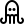

+-----------------------------------------------------------+
| |
| ██████╗ ███████╗██╗ ██╗███████╗██████╗ ███████╗███████╗|
| ██╔══██╗██╔════╝██║ ██║██╔════╝██╔══██╗██╔════╝██╔════╝|
| ██████╔╝█████╗ ██║ ██║█████╗ ██████╔╝███████╗█████╗ |
| ██╔══██╗██╔══╝ ╚██╗ ██╔╝██╔══╝ ██╔══██╗╚════██║██╔══╝ |
| ██║ ██║███████╗ ╚████╔╝ ███████╗██║ ██║███████║███████╗|
| ╚═╝ ╚═╝╚══════╝ ╚═══╝ ╚══════╝╚═╝ ╚═╝╚══════╝╚══════╝|
| |
| ██████╗ ██████╗ ██████╗ ████████╗ |
| ██╔══██╗██╔═══██╗██╔══██╗╚══██╔══╝ |
| ██████╔╝██║ ██║██████╔╝ ██║ |
| ██╔═══╝ ██║ ██║██╔══██╗ ██║ |
| ██║ ╚██████╔╝██║ ██║ ██║ |
| ╚═╝ ╚═════╝ ╚═╝ ╚═╝ ╚═╝ |
| |
| A B I S M O |
| v0.1.0 |
+-----------------------------------------------------------+

--- Bienvenido al Abismo de reversePort ---
Escribe 'help' para ver los comandos disponibles.
npx reverseport --subdominio tu-nombre
Sin procesos de registro ni gestión de tokens. La herramienta más ágil para transitar de local a global mediante infraestructura CLI-First.
Gestión optimizada de flujos de datos concurrentes, garantizando estabilidad superior en aplicaciones de alto tráfico y WebSockets.
Modelo basado en contribuciones voluntarias que asegura la independencia del proyecto y una relación directa con la comunidad.
npm install -g reverseport
Ejecuta el comando y elige tu dominio.
Tu localhost es ahora parte del internet global.
Implementación de una pantalla de seguridad (Interstitial) para prevenir ataques de phishing y alertar sobre el acceso a túneles de desarrollo.
El túnel actúa únicamente como un conducto de red para el puerto especificado. El sistema host permanece aislado bajo la seguridad nativa del SO.
Mecanismos integrados de reporte de abuso instantáneo para garantizar que el Abismo permanezca como un entorno seguro para todos.